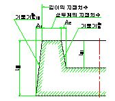

주철품 보통 허용차 (KS B 0411)
■ 적용범위: 모래주형에 (정밀 주형 제외) 따른 회주철품 및 구상 흑연 주철품의길이 및
살두께 치수의 보통 허용차로 도면에 기입하지 않고 일괄처리 지시에 적용.
<길이의 보통 허용차>
단위 : ㎜
|
재료 |
회 주 철 품 |
구상 흑연 주철품 |
||
|
치수구분 등급 |
정 밀 급 |
보 통 급 |
정 밀 급 |
보 통 급 |
|
120 이하 120 초과 250 이하 250 초과 400 이하 400 초과 800 이하 800 초과 1600 이하 1600 초과 3150 이하 |
±1 ±1.5 ±2 ±3 ±4 - |
±1.5 ±2 ±3 ±4 ±6 ±10 |
±1.5 ±2 ±2.5 ±4 ±5 - |
±2 ±2.5 ±3.5 ±5 ±7 ±10 |
<살 두께의 보통 허용차>
단위 : ㎜
|
재료 |
회 주 철 품 |
구상 흑연 주철품 |
||
|
치수구분 등급 |
정 밀 급 |
보 통 급 |
정 밀 급 |
보 통 급 |
|
10 이하 10 초과 18 이하 18 초과 30 이하 30 초과 50 이하 |
±1 ±1.5 ±2 ±2 |
±1.5 ±2 ±3 ±3.5 |
±1.2 ±1.5 ±2 ±2.5 |
±2 ±2.5 ±3 ±4 |
<빼기 기울기를 주기 위한 치수A>
단위 :㎜
|
치 수 구 분 l |
치 수 A (최대) |
|
18 이하 |
1 |
|
18 초과 30 이하 |
1.5 |
|
30 초과 50 이하 |
2 |
|
50 초과 120 이하 |
2.5 |
|
120 초과 315 이하 |
3.5 |
|
315 초과 630 이하 |
6 |
|
630 초과 1000이하 |
9 |

<비고>
l은 그림의 l1 ,l2를 뜻한다.A는 그림의 A1, A2를 뜻한다.
<참고> 보통허용차의 지시방법 : KS B 0411, 보통급